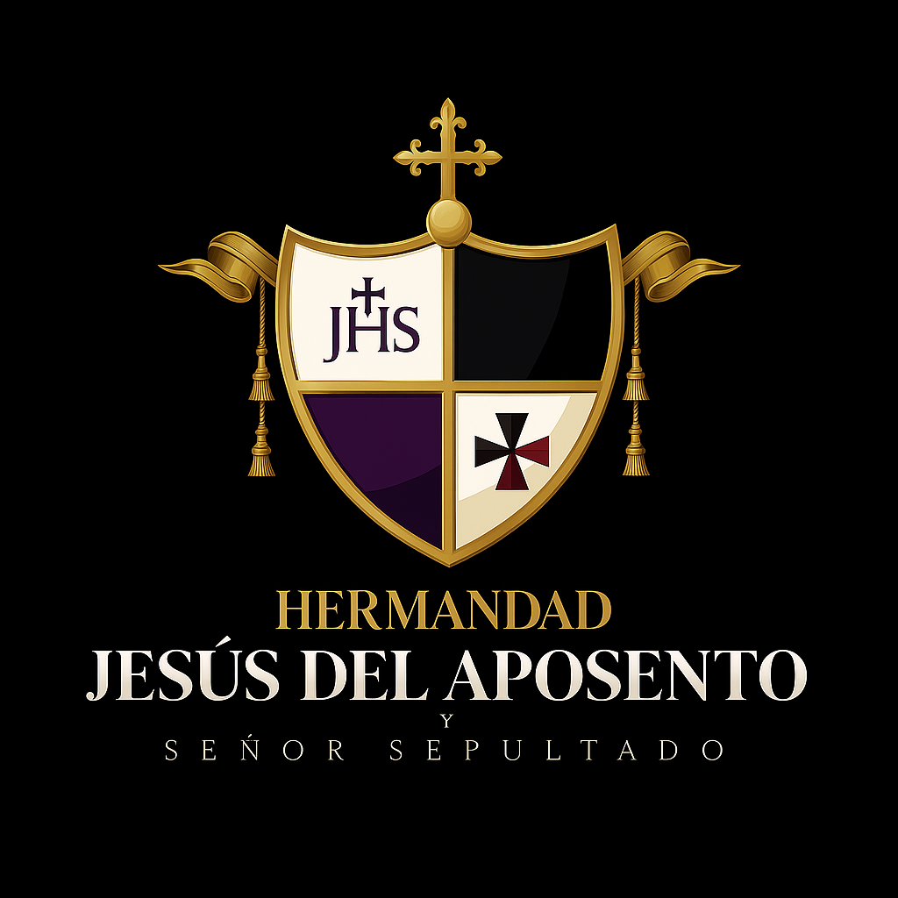
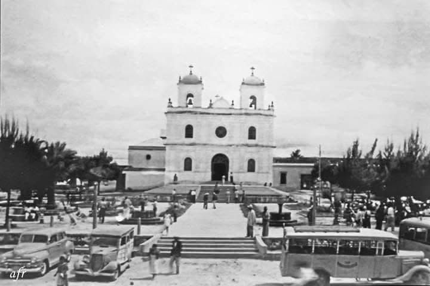

La Parroquia Santo Domingo de Guzmán, ubicada en el corazón del casco histórico de Mixco, zona 1, es uno de los templos más antiguos y emblemáticos del municipio. Su origen se remonta aproximadamente al año 1535, cuando los frailes dominicos establecieron en la región una sede para evangelizar a las comunidades indígenas tras la conquista española.
Con el paso del tiempo, el templo se convirtió en un centro espiritual, cultural y social para los habitantes de Mixco. Su arquitectura colonial, de estilo sobrio y tradicional, ha sufrido diversas reconstrucciones y restauraciones a causa de los terremotos que han afectado Guatemala, pero siempre ha conservado su esencia y su función como punto de encuentro de la fe católica.
La parroquia alberga valiosas imágenes religiosas, entre ellas la de Santo Domingo de Guzmán, su santo patrono, cuya festividad se celebra cada 4 de agosto con procesiones, novenas, misas solemnes y actividades que reflejan la profunda devoción del pueblo mixqueño. Durante estas celebraciones, las cofradías y hermandades locales tienen una participación destacada, manteniendo vivas las tradiciones heredadas desde la época colonial.
Hoy en día, la Parroquia Santo Domingo de Guzmán continúa siendo un símbolo de fe y tradición, no solo por su antigüedad e historia, sino por su papel activo en la vida religiosa y comunitaria de Mixco.
